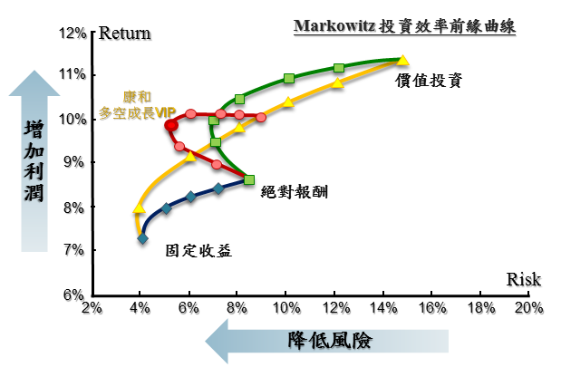

-
Q 01： 開戶需準備哪些文件？開戶需準備哪些文件？開戶需準備哪些文件？開戶需準備哪些文件？開戶需準備哪些文件？
只要填妥相關表格以及檢附應附文件即可辦理，並無身分限制。
身分證、第二證件、印鑑、存摺封面影本。
開戶書上一共有4個原留印鑑處，2個親簽處。非本國國人(無台灣身分證或居留證)或非本國企業(無台灣營業登記)無法申購基金。如為本國企業、
本國國人在境外設置分公司(營登在台灣) 或外派人員(有台灣身分證明)可透過以下方式申購 :
(1)至官網下載開戶資料，填妥後郵寄回官網上之地址。
(2) 來電客服專線02-3765-3688。如辦理定期定額，需先填開戶約定書後，再加填「定期定額申請書」。A、開戶契約文件
B、身分證正反面影本(或外國人有效居留証影本)
C、第二證件影本：健保卡、駕照（擇一提供）
A、受益人印鑑
B、受益人買回匯款帳戶存摺封面影本。
C、七十歲以上受益人備 註
● 開戶契約文件：
1.勾選同意開戶暨傳真交易約定條款
2.勾選是否同意適合度分析表評估結果
3.受益人原留印鑑
●存摺封面影本：
如無摺需檢附以茲證明之文件
●七十歲以上受益人：
加填「70歲以上受益人主動開戶聲明書」
未滿20歲之未成年人
A、開戶契約文件
B、身分證正反面影本（若無，請檢附戶口名簿或近三個月之戶籍謄本影本）。
C、第二證件影本：健保卡、駕照（擇一提供）。
D、法定代理人雙方之身份證正反面影本及第二證件影本。 -
Q 02： 如何開戶？
請洽官網下載填妥開戶約定書後，將開戶約定書交至康和期貨經理事業基金事務部或郵寄正本至康和期貨經理事業。開戶文件須為正本不可傳真開戶。康和期經基金事務部收到開戶正本，會主動和客戶通知。
-
Q 03： 我想幫我子女準備教育基金，我可以幫我子女代為開戶嗎？
如子女未成年，基金商品適合度分析表由法定代理人之經驗填寫。父母為未成年子女之法定代理人，對於未成年子女之權利義務，依民法規定，除法律另有規定外，由父母共同行使或負擔。因此，為善盡公司義務，以及確保父母雙方的權利義務，需同時留存父母親雙方證件資料以及印鑑章。
-
Q 04： 開戶作業流程？
若您的開戶文件沒有問題，一般的開戶審核作業大約在3個工作天內，若您於開戶時有指定自動扣款帳戶（意即有附上「全國性繳費(稅)業務授權轉帳扣款申請書」），因該文件需經銀行核印，作業時間依各銀行實際作業而定，一般約需15~20個工作天。
-
Q 01： 如何申購？
本基金首次申購書與開戶書結合，填寫完申購金額，及手續費費率後，當天下午三點半前您可透過ATM轉帳或親洽銀行完成匯款。如再次申購，需填寫「申購申請書」。開戶時，如勾選同意傳真交易者，可傳真申請書至康和期經。如無勾選同意傳真交易者，需郵寄正本至康和期經或親自將申請書交至康和期經。匯款人限以申購人(即受益人)本人名義匯款，不接受以第三人名義代為匯款，單筆申購亦不接受約定扣款。（但匯款人與申購人本人之關係為配偶或未成年子女者，不受上述限制，請另附關係之證明文件）。匯款至康和多空成長期貨基金專戶，最低單筆申購金額為一萬元，定期定額為三千元。
匯款帳號為：
自然人：689+兩碼銷售機構碼+身分證字號後9碼數字
法人：689+兩碼銷售機構碼+0+統一編號8碼數字如匯款金額不足申購總價款時，本公司得從申購價款中扣除手續費。本公司以實際到帳日為申購日。申購款金額匯錯時，應於結帳前與客戶或相關銷售單位聯絡確認申購款及手續費的認列或即時補匯，並於結帳前確認款項是否補匯。申購款匯錯基金專戶或非客戶款項誤匯入基金專戶，應以電話與客戶或相關銷售單位聯絡，請填寫退匯通知書，先傳真並將正本寄回公司，依通知書指示退匯。
-
Q 02： 以未成年子女名義申購基金，是否可從父母之帳戶匯款或扣款？
定期定額：自動扣款只能由申購人帳戶扣款，無法由第三人帳戶扣款。
單筆申購：以臨櫃或郵寄等書面方式申購基金，可以父母之帳戶匯款或轉帳，但需附匯款人與申購人的關係證明文件。
-
Q 03： 基金申購後，會收到什麼憑據？
單筆申購客戶會在交易後五天內收到一份「交易確認單」，之後於每季寄送對帳單。
定期定額客戶，不會寄送交易確認單，之後於每季寄送對帳單。客戶也會不定期收到公司投資相關訊息。但您若是向指定信託用途的銀行申購(如:永豐銀行…等)，由銀行直接對您寄發對帳單。
如需相關資料訊息請至康和期經官網查詢。
-
Q 04： 如何買回？
請洽官網下載「買回申請書」填完並蓋上原留印鑑後，開戶時，如勾選同意傳真交易者，可傳真申請書至康和期經；如無勾選同意傳真交易者，需郵寄正本至康和期經或親自將申請書交至康和期經。
康和期經基金事務部收到傳真買回申請書，請客戶於傳真後十分鐘內主動向康和期經確認收件。基金買回之款項必須匯入受益人本人之帳戶。
-
Q 05： 買回基金，是以哪一天淨值買回？
若於營業日當天交易時間內（3:30）以前完成交易，除另有暫停交易公告，買回皆以交易申請成功日之次一營業日( T+1 )淨值計算。
若扣款日適逢例假日、基金非計價日或遇地震、颱風……等臨時放假，交易日將自動順延至次一營業日扣款，且以該日淨值計算之。從申請當天（3:30）往後算5個工作天( T+5 )即可收到款項。
-
Q 06： 買回基金時，是否有短線交易之規定？
短線交易之認定標準及相關收費標準:
1.本公司以追求本基金長期之投資利得及維持收益安全為目標，不歡迎受益人對本基金進行短線交易。
2.基金短線交易之認定標準：
(1) 受益人持有基金未滿七個日曆日(含)者，應支付依買回價金百分之零點零壹(0.01%)計算之買回費用；買回費用計算之新臺幣「元」，不足壹元者，四捨五入。
(2) 前述「未滿七個日曆日」之定義係指：以「受益憑證買回申請書或電子資料及其相關文件之書面資料到達本公司或公開說明書所載基金買回機構次ㄧ營業日」之日期減去「申購日」之日期，小於或等於七日者。
(3) 定期定額投資者得不適用短線交易認定標準。
-
Q 07： 如何買回及買回轉申購交易時間為？
-
Q 08： 部份買回有無最低庫存單位數的限制？
最低買回300單位，庫存低於300單位不可部份買回。
-
Q 09： 若存款不足，對每月定期(不)定額投資有何影響？
若您扣款銀行中的存款不足，當月扣款失敗，即無法購買基金。若連續三次扣款失敗，即強迫終止扣款。
-
Q 10： 申請買回時，如何計算淨值？
只要您於營業日當天(T日)下午4:00以前下單，買回的淨值都以次一營業日(T+1)為準。
-
Q 01： 若日後要變更基本資料或是指定扣款銀行帳號應如何辦理？
-
Q 02： 如何變更定期定額資料？
定期定額變更：請洽官網下載「定期定額授權變更申請書」填完並蓋上原留印鑑後，需郵寄正本至康和期經公司或親自將申請書交至康和期經辦理(地址: 台北市信義區基隆路一段176號14樓)。
此申請書只接受正本，無法以傳真交易，扣款日(6、26日)前五日不處理變更作業。變更買回匯款帳戶或變更扣款帳號需檢附存摺封面影本。
如：扣款日期、扣款金額、暫停扣款、恢復扣款、終止扣款、扣款人或扣款帳號等變更。
-
Q 03： 如何辦理死亡、繼承、質讓等作業？
辦理轉讓過戶相關手續交期經公司需備齊資料，若期經公司審核有缺漏時，需將整份資料退還受益人或其代理人，待其資料備妥後再行辦理。
(1)受益人直接轉讓者：
A.讓受雙方填具受益憑證轉讓過戶申請書。
B.檢附證券交易稅完稅證明。
(2)法院拍賣或強制執行：
A.檢附受益憑證戶申請書，法院拍賣筆錄及權利移轉證明，並附證券交易稅完稅證明。
B.讓受雙方填具受益憑證轉讓過戶申請書。受益憑證轉讓過戶申請書出讓人蓋章欄，得以法院權利移轉證明代替之。
(3)繼承過戶：由繼承人填具過戶申請書，並檢附下列文件：
A.繼承系統表(由申請繼承人依民法第一千一百三十八條至一千一百四十條之規定，自行擬定，如有遺漏或錯誤，由申請人自行負責)。
B.受益憑證被繼承人除籍謄本及繼承人全部或部份戶籍謄本。
C.全部繼承人國民身分證正本或戶政事務所發給之印鑑證明書正本(繼承人為未成年或受輔助宣告之人時，應加法定代理人雙方或輔助人之國民身分證正本或戶政事務所發給之印鑑證明書正本)；繼承人委託他人辦理者，受託人及繼承人皆應為本國國民，或持有合法居留證之外國人。
D.繼承人有數人時，其應繼分依民法繼承編應繼分規定分配者，填具全部繼承人受益權單位分配同意書；由法院裁判者，檢附法院裁判書。
E.遺產稅完稅或免稅證明書。遺產及贈與稅法第四十一條規定核發之遺產稅完稅證明書或免稅證明書。
(4) 贈與過戶：填蓋受益憑證轉讓過戶申請書，並檢附依遺產及贈與稅法第四十一條規定核發之贈與稅完稅或免稅證明書。
(5) 質讓：受益憑證設定質權，由出質人及質權人填具「受益憑證質權設定/撤銷通知書」送交期信事業辦理登記，經登記後使得對抗期信事業，期信事業並免出具質權設定證明書。其質權消滅時，應向期信事業為消滅質權之登記。以證券集中保管之受益憑證為設質之標的者，依該事業相關規定向受益憑證餘額所登載之機構申請辦理，並由該事業將出質人、質權人之姓名、設質受益權單位數及收益分配約定事項通知期信事業辦理登記。質權存續期間，有關基金分配收益之領取，應於質權設定書中約定由出質人或質權人領取。受益憑證停止過戶期間，期信事業仍應受理質權設定之登記。
-
Q 01： 『康和多空成長期信基金』的募集期?
2013/11/27起
-
Q 02： 『康和多空成長期信基金』的閉鎖期?
本基金自成立日後滿45日，受益人始得申請買回。「閉鎖期」期間除非已達募集金額上限，仍可接受投資人申購。
-
Q 03： 期貨信託基金特色
期貨的三大特色『多空雙向、多元配置、槓桿效應』
1.資產配置 黃金比例
投資首要在於結構，諾貝爾經濟學獎得主威廉夏普William Sharp(夏普指數發 明人)曾研究指出：「成功的投資有85%的報酬歸功於正確的資產配置；10%的 報酬來自選股時的技術；5%則必須靠上帝的保佑。」外資進出各國股市，都是 一手股票、一手期貨，長期都是市場贏家；期信基金除期貨外亦可配置股票、 債券、定存、短票、RP等各種不同投資工具。股票加上固定收益即為平衡型基 金，如再加上各種期貨投資策略(與股票、固定收益具低相關性)，依據諾貝爾經 濟學獎得主馬克維茲在1952年提出的投資組合理論，將可創造更高的投資效率 (報酬/風險)，這也是期貨基金在結構上首要優勢。
2.多空成長 滿足夢想
2008年金融海嘯時，大部份的金融資產都腰斬，還有2010年歐債風暴…那時 候的投資經驗是什麼？可能賺了三、四年，但不到半年就全都賠光了，然而在 當時，全球反而有一種投資產品績效不斷地在創新高，那就是國際CTA管理 期貨基金，時至今日，全球機構法人，不論主權基金、退休基金、校務基金， 都要求投資組合裡面一定要配置有多空雙向、絕對報酬的基金，而多空雙向、 絕對報酬正是期貨及期信基金特色。
3.多元配置 穩健增值
多空成長，化危機為利機；多元配置，讓資產穩健增值。善用每一分錢，投資 全世界，將期望值變成產值。全球期貨商品，可分為五大類─金、木、水、火、 土。
金：貴重金屬，黃金、白金、白銀、銅、鋁、鉛、鋅、鎳…等。
木：農作物，黃豆、玉米、小麥、咖啡、棉花、橡膠、紅豆…等。
水：水就是財，就是外匯：美元指數、歐元、澳幣、英鎊、瑞士法郎…等。
火：就是能源，如輕原油、布侖特原油、汽油、天然氣、熱燃油…等等。
土：就是指數，近二十個美、歐、亞洲主要國家股價指數。
透過期信基金，輕鬆投資全世界！
4.槓桿效應 增加收益
期貨具備槓桿效應，期貨的保證金制度，可讓投資相同的東西，100元只要投入 10元，但餘下的90元並非用來加倍投資期貨，90元可以存入債券、定存、RP 等固定收益，達到投資現貨的效果，還多一部份固定收益。期貨的槓桿效應也讓 期信基金有更高的資金彈性、資金使用效率，除了期貨保證金，更可靈活搭配其 他投資工具，多空雙向、多元配置。事實上，這樣的結構，多空雙向可以避險(系 統風險)，多元配置可以分散風險(非系統風險)，槓桿效應固定收益低曝險，更有 助於期信基金追求絕對報酬與更高的投資效率。
-
Q 04： 『康和多空成長期信基金』的成長方程式?
利用價值投資大師巴菲特的『股票價值投資』+金融巨鱷索羅斯的『期貨避險套利』+債券天王葛洛斯的『現金固定收益』等投資哲學融合成康和多空成長方程式
股票價值投資：長期投資績優、獲利、高殖利率之台灣上市櫃公司，並將部分持股出借增加基金收益。
期貨避險套利：運用期貨特色多空雙向為股票價值投資避險、並以康和期經實盤操作多年之全球商品型態辨識系統Algorithm Program近千套策略，多元配置交易全球4大洲、12個交易所、57種以上商品。(請參閱Q20)
現金固定收益：現金部位，可充分配置在固定收益型商品，如：人民幣定存、債券RP。
-
Q 05： 『康和多空成長期信基金』期貨基金是否有匯率風險?
期貨信託基金之外匯避險方法：
本基金交易對手都設於國內，不涉及資產之匯進及匯出，惟存放期貨商之期貨保證金及銀行、證券商、票券商等流動性準備將存在外幣，由於常態比重低於50%且分佈7~8種幣別以上，且全球商品型態辨識系統中亦涵蓋外匯期貨之策略，因此本基金主要採自然避險，即不就外幣資產額外進行避險。但期貨信託公司依善良管理人之注意義務仍得從事換匯、遠期外匯交易、換匯換利交易、新臺幣對外幣間匯率選擇交易或其他經金管會核准交易之證券相關商品之操作，以規避外幣之匯兌風險。
-
Q 06： 能否用五分鐘簡單介紹『康和多空成長期信基金』?
運用兩位諾貝爾經濟學獎得主威廉夏普的資產配置理論及馬可維茲的現代投資組合理論，創造最佳「投資效率前緣」，提供給投資朋友們鑽石結構精品價值的基金。多空成長滿足夢想，股市上漲時具備加碼效果，股市下跌時能夠充分避險，多元配置穩健增值；透過資產配置善用每一分錢，投資全世界，將期望值變收益的產值。
康和期貨信託基金結合：1.期貨避險套利、2.股票價值投資、3.現金固定收益三大優勢策略，做好最佳的資產配置，如此相輔相成黃金比例中穩定成長，運用近千套投資策略多空避險，交易四大洲12個交易所57種以上商品多元分散，最後納入債券 RP及人民幣定存等固定收益，讓您在股市漲跌中都能穩健增值。
-
Q 07： 『康和多空成長期貨信託基金』經理人資歷?
這檔基金由康和期經林豪威投資長擔任基金經理人，是國內唯一具備國內股票型基金、期信基金、海外避險基金管理經驗之基金經理人
林豪威投資長經歷：
中華民國期貨公會期信委員會委員
康和資產管理(香港)總經理
康和價值CTA基金經理人
寶來投信期貨信託處主管
寶來商品指數期貨信託基金經理人
寶來新台灣基金經理人
-
Q 08： 期信基金與證券投資信託基金有何不同？

-
Q 09： 康和多空成長期貨信託基金有那些投資優勢？
低利率的時代，投資必須要有高效率的選擇。期信基金在結構及各項特色上，更有助於提高投資效率。藉由結構優勢，以往績效表現優異的期貨基金，或者避險基金都位於海外。國內期信基金的發展，可以提供投資人更多投資選擇，特別在QE即將限縮所展開的不確定循環中，對不特定人募集(公募)期信基金，和其他基金一樣投資門檻低，單筆一萬元新台幣、定期定額三千元新台幣即可投資。同樣為有價證券，法人投資便利，基金以新台幣計價，無外匯風險，且資產存放於台灣，大幅降低海外交易對手風險，透明度、流動性高，申購、贖回很方便。基金投資多項優勢，無證所稅及境外所得等問題。期信基金沒有持股需達七成的限制，多空成長、多元配置，追求絕對報酬，滿足投資夢想！
-
Q 01： 期貨基金／期貨全委的特色為何?
期貨跟其他投資標的最大的不同，在於期貨本質上是一紙合約，可以做多也能做空，只要運用得宜，不只可以避掉空頭的風險，甚至多空兩頭賺都有可能，而這也是期貨交易能夠不畏空頭的最主要原因。期貨本身既然是一紙合約，投資標的範圍當然可以很廣，舉凡股票指數、黃金、玉米、外匯或原油都可以是期貨的投資標的。投資人只需購買一檔基金就能達成投資全世界的理想。
期貨還有很重要的一項特點，那就是保證金交易制度。藉由槓桿操作，期貨基金/期貨全委得以幫投資人充分善用每一分錢，在同樣的資金規模底下，更效率的投資。因此，多空雙向、多元配置、槓桿操作，就是期貨基金/期貨全委的三大特色。
-
Q 02： 期貨基金/期貨全委風險評估為何?
一般投資人普遍認為投資期貨風險很高，這是因為太多人誤用了期貨可槓桿操作的特性。事實上，專業投資機構在運用期貨的時候，會同時利用期貨可多空雙向、多元配置，以及槓桿操作等三大特色，讓期貨追擊市場趨勢與避險套利的功能發揮到極致，進而使整體資產能更加穩健的成長。
過去十年台股下跌超過5%的月份共有29次，平均出現9.93%的負報酬，但在此同時，CTA期貨基金卻可以創造平均0.69%的正報酬。以2008年金融海嘯期間為例，CTA期貨基金的表現不論從報酬率、波動率與最大下跌比率來看，均顯示出期貨基金/期貨全委有機會將市場風險轉化為獲利契機。(資料來源:台灣銀行家雜誌2011年5月號)
-
Q 03： 期貨基金在理財上的好處有哪些?
證交稅、證所稅的議題持續延燒。國內投資人無不小心翼翼，深怕一不小心踩到紅線，就會造成不必要的損失；對海外投資者來講，2010年開始實施的境外所得課稅，也讓很多人感嘆投資獲利大不易。反觀期貨基金卻是得天獨厚，享盡各種優勢，不但沒有證所稅的問題，國外期貨獲利同樣免徵所得稅，2013年起期交稅還減半徵收，讓投資期貨基金的成本優勢更具競爭力。低成本、低門檻、低波幅、高透明度及流動性佳為期貨基金之特性。公開發行的期貨基金三千元即可定期定額投資，符合大眾投資需求。
-
Q 04： 投資期貨全委的優勢有哪些?
完整運用期貨交易多空雙向、多元配置、槓桿操作等三大特性，本公司精心設計研發之期貨全委的成長方程式 = 股票價值投資 + 期貨避險套利 + 現金固定收益
股票價值投資：以價值投資哲學為理念，由具有長期投資價值之上市、上櫃公司股票形成投資組合，搭配期貨避險策略模組，降低市場風險，進而提高投資人收益。期貨避險套利：運用期貨多空雙向、多元配置特性，研發出全球商品型態辨識系統「CTA管理期貨量化模組」，獲取市場波動及套利收益。現金固定收益：利用期貨高槓桿之特性，將除保證金外之現金部位，充分配置在固定收益型商品，以獲取投資最大效益。
期貨全委之交易對手皆位於國內，資產存放於國內保管銀行與經紀商，高透明度之特性；相關投資結合理論與實務，藉由馬可維茲組合理論，操作多空、配置多元，不受市場漲跌影響，在風險分散之前提下，為投資人追求穩健報酬的機會。
完整運用期貨交易多空雙向、多元配置、槓桿操作等三大特性，本公司精心設計研發之期貨全委的成長方程式 = 股票價值投資 + 期貨避險套利 + 現金固定收益

-
Q 05： 我要如何參與期貨全委呢?
善用身邊資產，累積未來財富。我們提供一種最效率的投資理財方法，即是投資期貨全委(康和多空成長VIP管理帳戶)，享受風險分散及專家理財的投資成果。詳細流程請聯絡我們，輕鬆完成相關手續。
-
Q 06： 我要如何知道期貨全委的相關訊息呢?
投資人可以打電話給我們，由專員為您服務解說，讓您瞭解期貨全委商品之內容資訊，十分便利。
-
Q 01： 請問全權委託最低代操金額額度為多少?
法令規定最低為100萬元，但康和期經對於操作金額及風險還是因應個別客戶群不同，會提供最適方案。
-
Q 02： 請問康和期經全權委託可以隨時出入金嗎?
全權委託代操依照合約規定可以依照客戶需求別在簽約時做調整，然而為維持策略運作平穩性，還是建議客戶定期做財務最適分配。
-
Q 03： 請問康和期經全權委託可以指定經理人嗎?
可以，依照法令規定，全權委託客戶需在合約明定委託經理人。